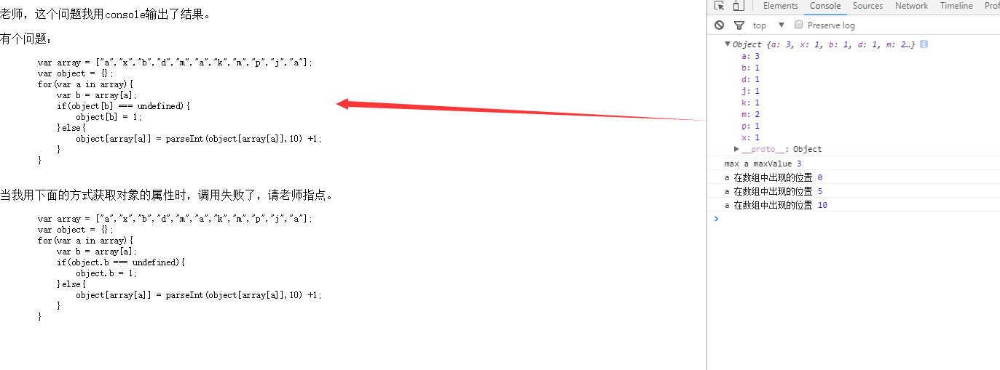
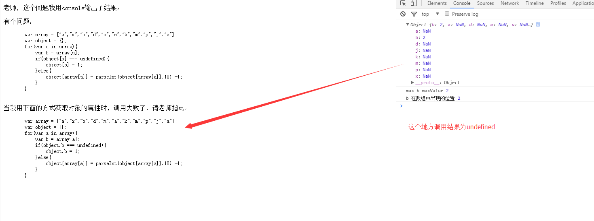

老师，这个问题我用console输出了结果。
有个问题：
var array = ["a","x","b","d","m","a","k","m","p","j","a"];
var object = {};
for(var a in array){
var b = array[a];
if(object[b] === undefined){
object[b] = 1;
}else{
object[array[a]] = parseInt(object[array[a]],10) +1;
}
}
以下为运行结果截图
祝各位老师，国庆快乐。
当我用下面的方式获取对象的属性时，调用失败了，请老师指点。
var array = ["a","x","b","d","m","a","k","m","p","j","a"];
var object = {};
for(var a in array){
var b = array[a];
if(object.b === undefined){
object.b = 1;
}else{
object[array[a]] = parseInt(object[array[a]],10) +1;
}
}
以下为运行结果截图
